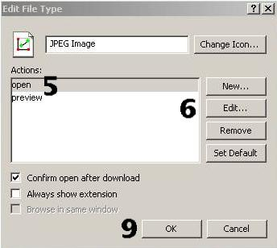
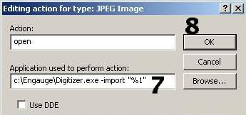

Engauge Digitizer - Adding To Windows Explorer Context Menu
Engauge Digitizer - Adding To Windows Explorer Context Menu
Engauge Digitizer - Adding To Windows Explorer Context Menu
Engauge Digitizer - Adding To Windows Explorer Context MenuIn Windows Explorer a simple right-click on an image file will bring up a context menu that lists some software applications. Clicking on one of those applications starts that application, and loads the image file.
Engauge Digitizer can be inserted into that context menu, where it is easily available for processing image file formats such as BMP, GIF, JPEG, PNG and XPM.
Frequent users of Engauge Digitizer will appreciate the speed of context menus.
Follow these ten steps to add Engauge Digitizer to the Windows Explorer context menu:
c:\engauge\digitizer.exe -import "%1"


